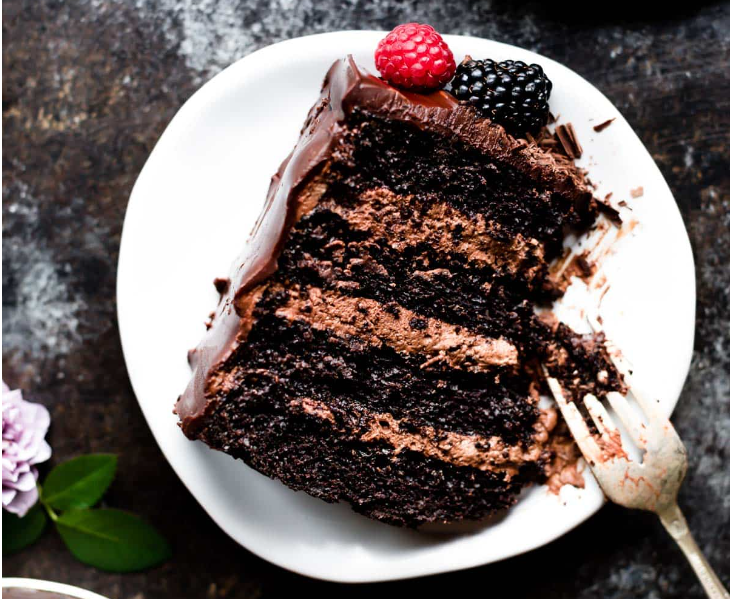

Chocolate Mousse Cake

Ingredients
Cake
- 1 and 3/4 cups all-purpose flour
- 3/4 cup unsweetened natural cocoa powder
- 1 and 3/4 cups granulated sugar
- 2 teaspoons baking soda
- 1 teaspoon baking powder
- 1 teaspoon salt
- 2 teaspoons espresso powder
- 1/2 cup vegetable oil
- 2 large eggs
- 3/4 cup sour cream
- 1/2 cup buttermilk
- 2 teaspoons pure vanilla extract
- 1/2 cup hot water
- 1 cup mini semi-sweet chocolate chips (HU is my favorite brand)
- optional garnish: fresh berries and/or chocolate shavings
Chocolate Mousse
- 1/2 cup hot water
- 1/4 cup unsweetened cocoa powder
- two 4-ounce quality semi-sweet chocolate bars (HU is my favorite brand)
- 2 cups heavy cream
- 1/2 teaspoon pure vanilla extract
Chocolate Ganache:
- two 4-ounce quality semi-sweet chocolate bars (HU is my favorite brand)
- 1 cup heavy cream
Steps
- Preheat oven to 350°F. Grease four 8-inch or 9-inch cake pans,
line with parchment paper rounds, then grease the parchment paper.
Parchment paper helps the cakes seamlessly release from the pans.
-
Make the cake: Whisk the flour, cocoa powder, sugar, baking soda,
baking powder, salt, and espresso powder together in a
large bowl. Set aside. Using a handheld or stand mixer fitted with
a whisk attachment (or you can use a whisk) mix the oil, eggs, and
sour cream together on medium-high speed until combined. Add the
buttermilk and vanilla and mix until combined. Pour the wet
ingredients into the dry ingredients, add the hot water/coffee, and
whisk or beat on low speed until the batter is completely combined.
Fold in the chocolate chips, if using.
-
Divide batter evenly between 4 pans. Bake for 19-23 minutes. Baking
times vary, so keep an eye on yours. The cakes are done when a
toothpick inserted in the center comes out clean.
-
Remove the cakes from the oven and set on a wire rack. Allow to cool
completely in the pan. The cakes may slightly sink in the middle as
they cool—that’s expected.
-
As the cakes cool, prepare the chocolate mousse so it can chill and
be ready at the same time as the cake layers. You can also prepare
the mousse 1-2 days ahead of time. Whisk the hot water and cocoa
powder together. Set aside. Melt the chopped chocolate bars in a
double boiler or use the microwave. If using the microwave: place
the chopped chocolate in a medium heat-proof bowl. Melt in 20 second
increments in the microwave, stirring after each increment until
completely melted and smooth. Pour hot water/cocoa mixture into
melted chocolate and stir until thick and smooth. Set aside. Using
a hand mixer or a stand mixer fitted with a whisk attachment, whip
the heavy cream, confectioners’ sugar, and vanilla extract together
on medium-high speed until medium peaks form, about 3-4 minutes.
Medium peaks are between soft/loose peaks and stiff peaks. Pour in
the chocolate mixture and using a spoon or rubber spatula, gently
fold together. Avoid over-mixing which can deflate/thin out the
mousse. Cover mousse and chill in the refrigerator for at least 2
hours and up to 2 days. Makes about 4.5 cups chocolate mousse.
-
Assemble layers before preparing chocolate ganache: First, level the
cakes if needed: using a large serrated knife, slice a thin layer
off the tops of the cakes to create a flat surface. Discard (or
crumble over ice cream!). Place 1 cake layer on your cake stand or
serving plate. Using a large icing spatula, evenly cover the top with
about 1.5 cups chocolate mousse. Top with 2nd layer and evenly cover
the top with 1.5 cups chocolate mousse. Top with the third cake layer,
then spread another 1.5 cups mousse evenly on top. Save a large spoonful
of mousse for a thin crumb coat. Top with final 4th cake layer. Spread
any remaining mousse around the sides as a crumb coat. Run a bench
scraper around the cake to smooth out crumb coat. Refrigerate cake
for at least 1 hour and up to 4 hours. Prepare the ganache as you wait.
-
Chocolate Ganache: Place chopped chocolate in a medium heat-proof bowl.
Heat the cream in a small saucepan over medium heat until it begins
to gently simmer. (Do not let it come to a rapid boil– that’s too hot!)
Pour over chocolate, then let it sit for 2-3 minutes to gently soften
the chocolate. With a metal spoon or small rubber spatula, very slowly
stir until chocolate has melted and mixture is smooth. The finer you
chopped the chocolate, the quicker it will melt with the cream. If it’s
not melting, do not microwave it. If needed, see Troubleshooting
Chocolate Ganache. Once ganache mixture is smooth, let it cool for 20
minutes at room temperature before spreading on chilled cake.
-
Pour/spoon ganache on chilled cake. Smooth the top with an icing spatula
and the sides with a bench scraper. Top with optional garnish such as
fresh berries and/or chocolate shavings. Serve cake immediately or chill,
uncovered, for up to 4-6 hours before serving. Cake can be served at
room temperature or chilled.